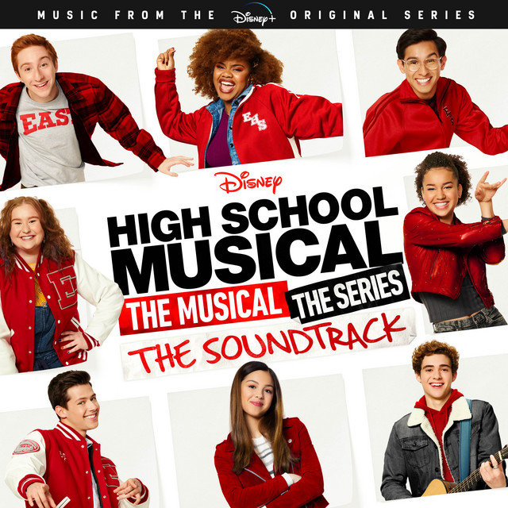

Album de Estudio
SOUR
 Escuchar
Escuchar
Escrito por Olivia Rodrigo, junto a otros pocos colaboradores y producido por Daniel nigro, Sour es principalmente pop alternativo que yuxtapone canciones optimistas de rock alternativo y pop punk junto a baladas lo-fi, impulsadas por guitarras, pianos y sintetizadores. Su temática aborda temas centrados en la adolescencia, el romance fallido y el dolor del corazón contados desde las distintas perspectivas de Rodrigo. Sour recibió aclamación universal de los críticos musicales, que lo consideraron un sólido debut y alabaron la versatilidad musical de Rodrigo, su honesto lirismo y su atractivo para la generación Z.
High School Musical: el musical: la serie (banda sonora)
 EscucharHigh School Musical: el musical: la serie es el álbum de banda sonora de la primera temporada de la serie de televisión web High School Musical: The Musical: The Series, que fue lanzado el 10 de enero de 2020 por Walt Disney Records. El programa en sí se distribuyó por primera vez en el servicio de streaming Disney+ a partir del 12 de noviembre de 2019;